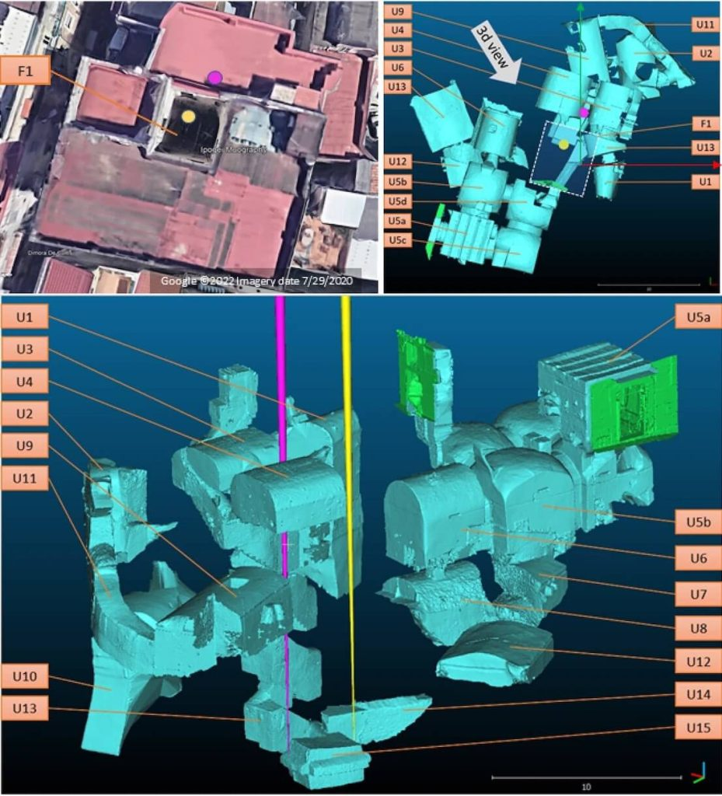

ယခု တွေ့ရှိချက်ကို Scientific Reports သုတေသန ဂျာနယ်မှာ သုတေသီ တွေက တင်ပြထားတာ ဖြစ်ပါတယ်။ မြို့ဟောင်းမှာ နေထိုင်ခဲ့တဲ့ ရှေး ခရစ်ယာန် တွေရဲ့ မြေအောက် သင်္ချိုင်းတွေကိုလဲ ရှာဖွေ တွေ့ရှိခဲ့ကြောင်း စာတမ်းမှာ တင်ပြထားပါတယ်။
အခု မြို့ဟောင်းဟာ နေပယ်မြို့ လယ်ကောင် မြေအောက်ထဲမှာ မြုပ်နေတာ ဖြစ်ပါတယ်။ အရင် ကတဲက ဒီနေရာမှာ မြို့ဟောင်း ရှိတယ်ဆိုတာ ပညာရှင် တွေ သိရှိခဲ့ပေမယ့် အပေါ်က မြို့သစ်ကြောင့် တူးဖော်နိုင်ခြင်း မရှိခဲ့ပါဘူး။
အခုအခါမှာတော့ နောက်ဆုံးပေါ် အာကာသရောင်ခြည် နည်းပညာကို အသုံးပြုပြီး မတူးဖော် ရပဲနဲ့ မြေအောက်က မြို့ဟောင်းကို ပညာရှင်တွေ မြင်တွေ့ခွင့် ရကြတာပဲ ဖြစ်ပါတယ်။

အခု မြို့ဟောင်းကို မြင်နိုင်ဖို့ ဒီ မြူယွန်တွေကို ဖမ်းယူနိုင်တဲ့ အာရုံခံ ကိရိယာ တွေကို မြေအောက် အနက် ၁၈ မီတာ အနက်မှာ အရင် တပ်ဆင် ကြရပါတယ်။ ပြီးတော့မှ မြေသားကို ဖြတ်လာတဲ့ မြူယွန်တွေကို သီတင်းပတ်ပေါင်း များစွာ ဖမ်းယူ ကြရပါတယ်။
ဒီလို ဖမ်းယူရရှိတဲ့ အချက်အလက် တွေကို ကွန်ပြူတာနဲ့ ပြန်လည်ပုံဖော်ယူ ကြရတာ ဖြစ်ပါတယ်။ ဒီနည်းနဲ့ မြေအောက်က နစ်မြုပ်နေတဲ့ မြို့ဟောင်းကို တူးဖော်စရာ မလိုပဲ မြင်တွေ့နိုင်တာ ဖြစ်ပါတယ်။
အခု မြို့ဟောင်းကို ရှေးက ကူမေး (Cumae) လို့ ခေါ်ခဲ့သလို နီယာပိုးလစ်စ် (Neapolis) လို့လဲ တချိန်မှာ အမည် တွင်ခဲ့ပါတယ်။
ယခု တွေ့ရှိမှုဟာ ဒီဒေသမှာ ပထမဆုံး တွေ့ရှိမှုတော့ မဟုတ်ပါဘူး။ ပြီးခဲ့တဲ့ အပတ်ကလဲ နေပယ်လ် မြို့ရဲ့ ကမ်းလွန် ပင်လယ်ပြင်မှာ နစ်မြုပ်နေတဲ့ ဂရိရှေးဟောင်း နတ်ဘုရားကျောင်းကြီး တစ်ခုကို ရှာဖွေ တွေ့ရှိ ခဲ့ပါသေးတယ်။ ဒီ နတ်ဘုရား ကျောင်းဟာ ဂရိနတ်ဘုရား ဒူရှရာ (Dushara) ကို ပူဇော်တဲ့ နတ်ဘုရားကျောင်း ဖြစ်ပြီး ခရစ်မပေါ်မီ ဘီစီ ၃ ရာစု ခန့်က ဖြစ်မယ်လို့ ခန့်မှန်း ကြပါတယ်။
Ref: Underground Greek tomb discovered in Italy by using cosmic rays – study